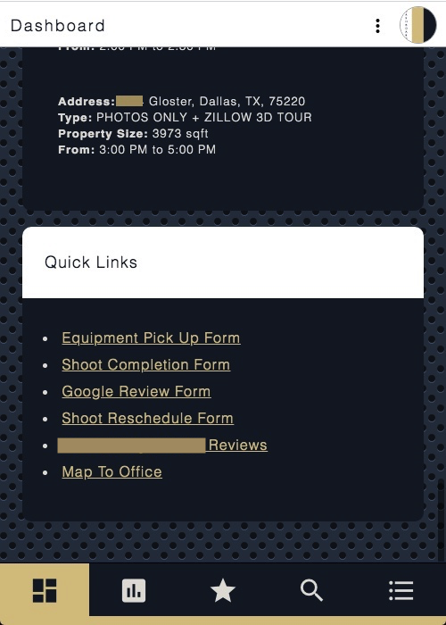

REP Dashboard
Project Details
This is an automated web appplication that displays, otherwise manually generated, information used for Real Estate Photography business processes. REP Dashboard takes photoshoot information from Google Calendar, aggregates it via Google Sheets, then presents it dynamically in a dashboard format. When used, this centralized hub eliminated approximately 10 hours a month in manual data entry, provided data insights over time (like a heat map), and improved time management for myself as a photographer.
Note: Since REP Dashboard was changed from its original name to avoid copyrighting, some versions of my resumé may list a different name for this project. "REP" is an acronym for Real Estate Photographer.
To save on resources and due to it not being currently used, REP Dashboard is not live.
Front End
The front end was built using the following resources.
- IDE: Google Cloud Platform's Script Editor; Text Wrangler
- Framework: Google Apps Script
- Languages: JavaScript; HTML; CSS
Back End
The back end was built with the following infrastructure.
- Authentication: OAuth 2.0 via Google Cloud Platform
- Automation: GCP's Triggers
- Data Source: Google Calendar Event; Photo hosting site
- Data Generation: AWS Lambda custom web scraper API; GCP's Distance Matrix API; GCP's Geocoding API; GCP's Maps JavaScript API
- Data Storage: Google Sheets
- Server Management: Apache Server running Linux via AWS EC2; Secure Shell
- URL Management: AWS Route 53; AWS Certificate Manager; AWS ELB
- Cloud Back Up, Logs, & Version Control: GCP's Execution Logs and version logs; GitHub; Git
- Languages: Python w/ JSON; JavaScript; Bash
Architecture Diagram
The following diagram shows the flow and integration of development resources.

User Interface
The user interface includes five tabs each with their own purpose. Below are screenshots and discriptions of each tab.
Interactive Features: Add To Favorites • Delete From Favorites • Search Old Shoots • Select Different Time Ranges For Pay And Mileage
Dashboard
- Display shoots from previous workday.
- Feature: Add To Favorites
- Display each day's shoots on a Google Map as a numbered pin.
- List details and location for each day's shoots.
- List projected pay and mileage for each day.
- Show upcoming shoots and details.
- Show most used resource links.

Photographer Stats
- Display user's accumilated pay and mileage in an interactive selector.
- Feature: Toggle Through Different Time Ranges
- Display user's accumilated photoshoot total.
- Display more accumilative user statistics.

Favorites
- Display user's favorited shoots.
- Feature: Delete From Favorites

Search
- Query user's previous shoots via date or partial address.
- Feature: Search
- Feature: Add To Favorites


Resources
- Display photographer resources.

Heat Map
The heat map below illustrates which areas in the DFW were the most popular for real estate photography bookings for the year 2020; blue being the most, yellow the least.
Note: this data only pertains to bookings from one real estate media company.